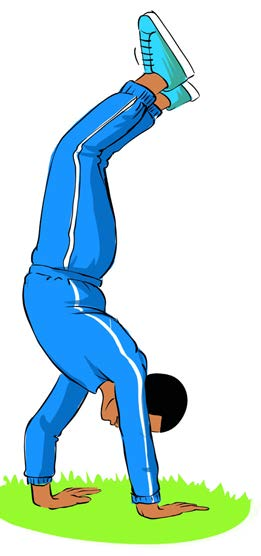

5.
Anza kutembea kwa mikono kwenda mbele, nyuma, kulia na kushoto; na
6.
Unaweza kufanya mbwembwe wakati unatembea.


Kazi ya kufanya namba 4
Fanya mazoezi ya kusimama na kutembea kwa mikono bila usaidizi wa mwenzako au ukuta.
Kujenga hanamu
Hapa mchezaji utatakiwa kushirikiana na wenzako kuunda maumbo mbalimbali kwa kutumia miili yenu. Maumbo hayo ni kama vile:
1.
Kuinuka na kuinuliwa kwa mikono, kama inavyoonekana katika Kielelezo namba 7;